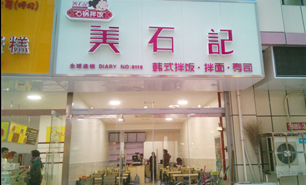

切换菜单
首页
关于我们
特色菜品
新闻资讯
合作加盟
联系我们
加盟电话 ：400-8528-908
新 闻 资 讯
NEWS AND INFO

04月21日
2019年
最 新
热烈祝贺：“美石记”荣获2017中国连锁餐饮消费者喜爱品牌
集世界烹饪之精华，汇天下美食之大成。尚京集团在餐饮连锁行业品牌发展上不断突破与创新，始终坚持着走特色餐饮道路努力总是有收获的，在尚京集团精心的耕耘下，旗下品牌“美石记”终于在众多竞争对手中脱颖而出，在首届...
热烈祝贺：“美石记”荣获2017中国连锁餐饮消费者喜爱品牌
2019年4月21日
集世界烹饪之精华，汇天下美食之大成。尚京集团在餐饮连锁行业品牌发展上不断突破与创新，始终坚持着走特色餐饮道路努力总是有收获的，在尚京集团精心的耕耘下，旗下品牌“美石记”终于在众多竞争对手中脱颖而出，在首届...
热烈祝贺：“美石记”荣获2017中国连锁餐饮消费者喜爱品牌
2019年4月21日
集世界烹饪之精华，汇天下美食之大成。尚京集团在餐饮连锁行业品牌发展上不断突破与创新，始终坚持着走特色餐饮道路努力总是有收获的，在尚京集团精心的耕耘下，旗下品牌“美石记”终于在众多竞争对手中脱颖而出，在首届...
热烈祝贺：“美石记”荣获2017中国连锁餐饮消费者喜爱品牌
2019年4月21日
集世界烹饪之精华，汇天下美食之大成。尚京集团在餐饮连锁行业品牌发展上不断突破与创新，始终坚持着走特色餐饮道路努力总是有收获的，在尚京集团精心的耕耘下，旗下品牌“美石记”终于在众多竞争对手中脱颖而出，在首届...
热烈祝贺：“美石记”荣获2017中国连锁餐饮消费者喜爱品牌
2019年4月21日
集世界烹饪之精华，汇天下美食之大成。尚京集团在餐饮连锁行业品牌发展上不断突破与创新，始终坚持着走特色餐饮道路努力总是有收获的，在尚京集团精心的耕耘下，旗下品牌“美石记”终于在众多竞争对手中脱颖而出，在首届...
热烈祝贺：“美石记”荣获2017中国连锁餐饮消费者喜爱品牌
2019年4月21日
集世界烹饪之精华，汇天下美食之大成。尚京集团在餐饮连锁行业品牌发展上不断突破与创新，始终坚持着走特色餐饮道路努力总是有收获的，在尚京集团精心的耕耘下，旗下品牌“美石记”终于在众多竞争对手中脱颖而出，在首届...
上一页
1
下一页